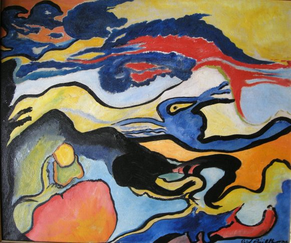

Grace Pailthorpe
1883 – 1971
Artist Biography
Grace Pailthorpe was born in Sussex and served as a surgeon in World War 1. After that conflict she turned to psychology, setting up what eventually became the Portman Clinic. She met the Surrealist painter Reuben Mednikoff in 1935 and they embarked on a life study of psychological art research. Pailthorpe fell out with the main British Surrealist group in the late 1930s but continued to paint until her death. Leeds City Art Gallery in 1998 held a major retrospective of her and Mednikoff’s work entitled Sluice Gates of the Mind. Mayor Gallery and others also showed her work.

Untitled, 1967